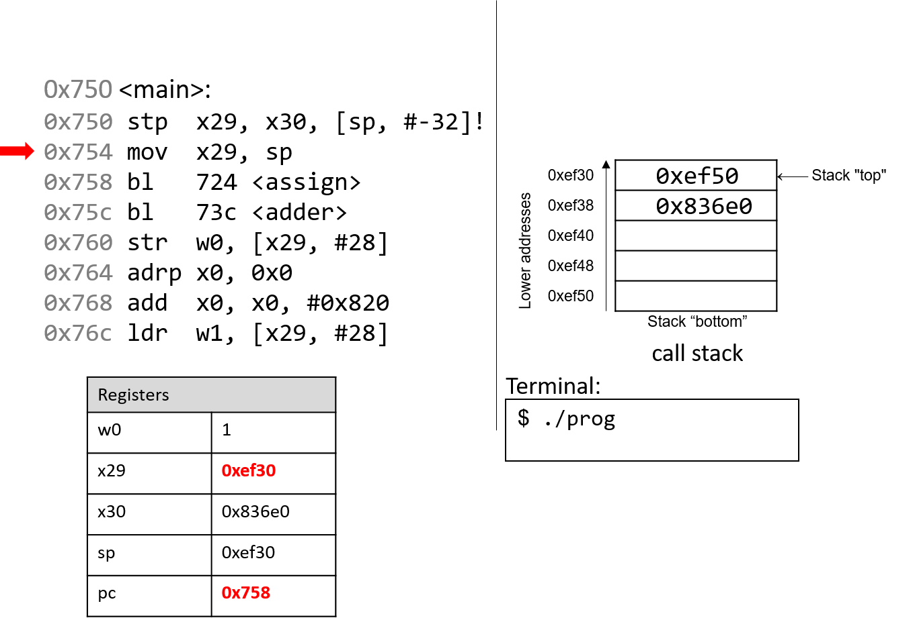
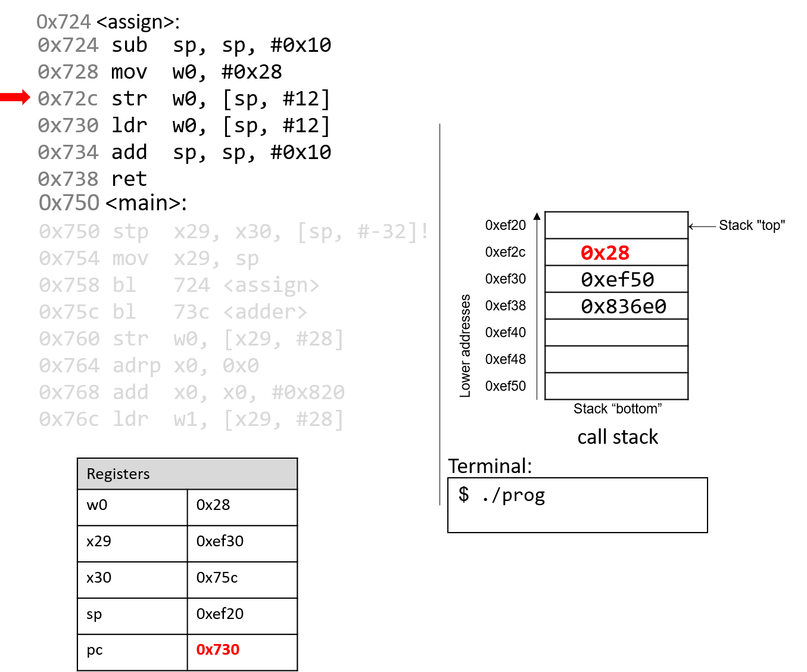
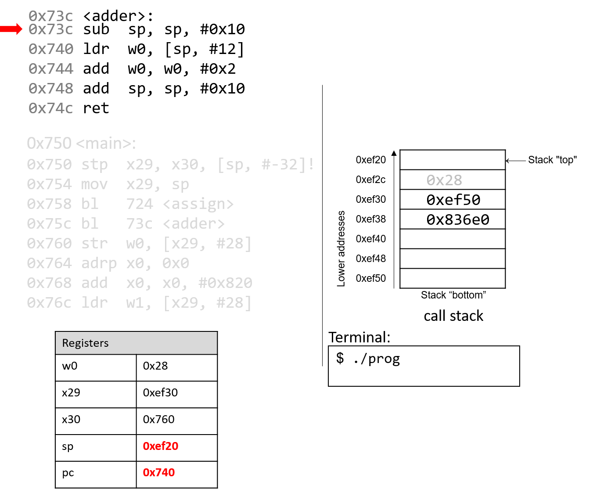
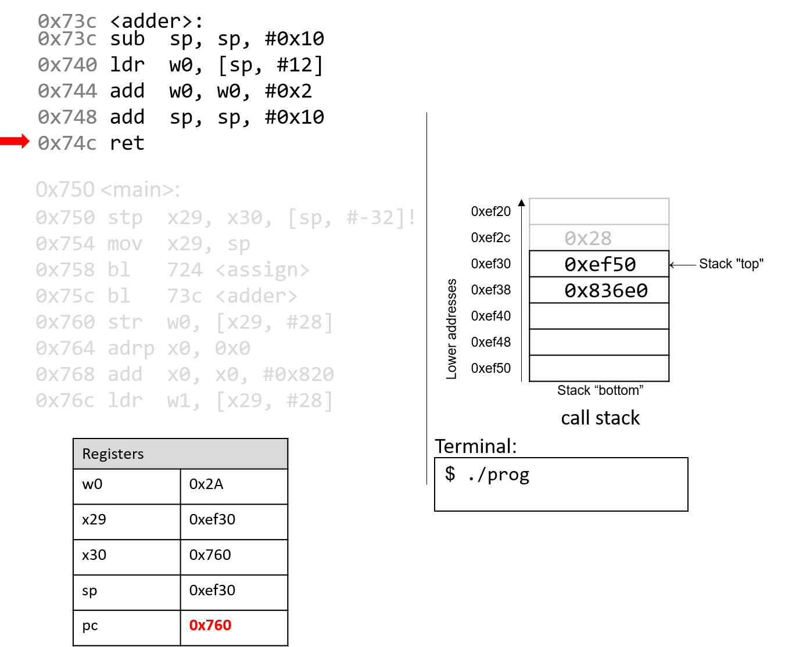
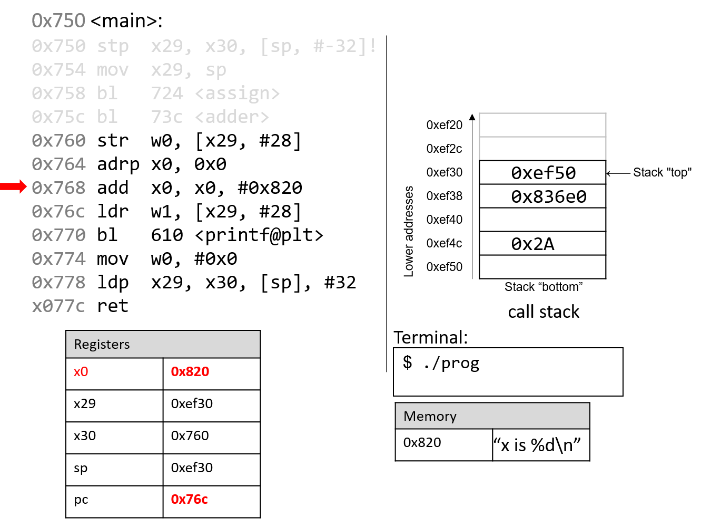
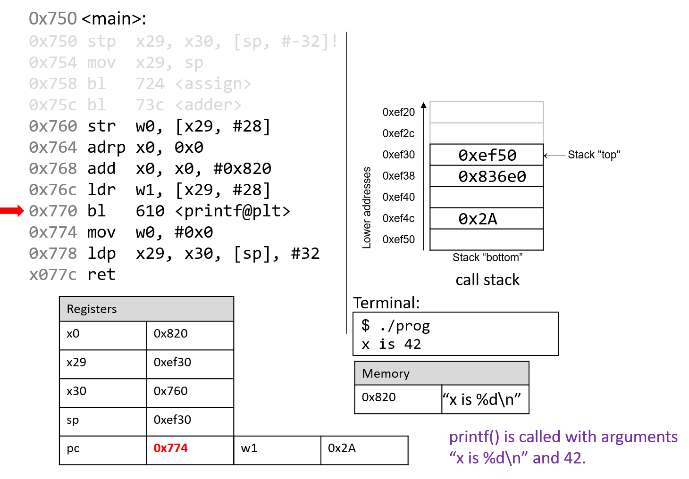

9.5. Functions trong Assembly
Trong phần trước, chúng ta đã lần theo quá trình thực thi của các hàm đơn giản trong assembly.
Trong phần này, chúng ta sẽ thảo luận về sự tương tác giữa nhiều hàm trong assembly trong bối cảnh của một chương trình lớn hơn. Chúng ta cũng sẽ giới thiệu một số lệnh mới liên quan đến việc quản lý hàm.
Hãy bắt đầu bằng việc ôn lại cách call stack được quản lý.
Hãy nhớ rằng sp là stack pointer (thanh ghi con trỏ stack) và luôn trỏ tới đỉnh của stack. Thanh ghi x29 đại diện cho base pointer (còn gọi là frame pointer hoặc FP) và trỏ tới đáy của stack frame hiện tại.
Stack frame (còn gọi là activation frame hoặc activation record) là phần của stack được cấp phát cho một lần gọi hàm. Hàm đang thực thi luôn nằm ở đỉnh stack, và stack frame của nó được gọi là active frame. Active frame được giới hạn bởi stack pointer (ở đỉnh stack, địa chỉ thấp hơn) và frame pointer (ở đáy frame, địa chỉ cao hơn). Activation record thường chứa các biến cục bộ của hàm.
Cuối cùng, return address là địa chỉ trong chương trình mà hàm gọi (ví dụ main) sẽ tiếp tục thực thi sau khi hàm được gọi (callee) kết thúc. Trên hệ thống A64, return address được lưu trong thanh ghi x30 (còn gọi là LR — Link Register).
Hình 1 cho thấy các stack frame của main và một hàm mà nó gọi tên là fname. Chúng ta sẽ gọi hàm main là hàm caller (hàm gọi) và fname là hàm callee (hàm được gọi).

Hình 1. Quản lý stack frame
Trong Hình 1, active frame hiện tại thuộc về hàm callee (fname). Vùng của call stack nằm giữa stack pointer và frame pointer được dùng cho các biến cục bộ. Stack pointer sẽ thay đổi khi các giá trị cục bộ được push (đẩy) lên hoặc pop (lấy ra) khỏi stack. Frame pointer thường không được sử dụng trong code đã tối ưu hóa, và thường là tùy chọn. Do đó, các compiler như GCC thường tham chiếu các giá trị trên stack tương đối so với stack pointer.
Trong Hình 1, active frame được giới hạn phía dưới bởi base pointer của fname, tức x29, chứa địa chỉ stack 0xef30. Giá trị lưu tại địa chỉ 0xef30 là giá trị frame pointer đã “lưu” (0xef50), vốn chỉ ra đáy của activation frame cho hàm main. Ngay bên dưới frame pointer là return address đã lưu (lưu trong x30), cho biết địa chỉ mà chương trình sẽ tiếp tục thực thi khi main thoát.
Return address trỏ tới code memory, không phải stack memory
Hãy nhớ rằng vùng call stack (stack memory) của một chương trình khác với vùng code (code memory). Trong khi
spvàx29trỏ tới địa chỉ trong stack memory,pctrỏ tới một địa chỉ trong code memory. Nói cách khác, return address là một địa chỉ trong code memory, không phải stack memory:
Hình 2. Các phần của không gian địa chỉ chương trình

Bảng 1 liệt kê một số lệnh bổ sung mà compiler sử dụng để quản lý hàm cơ bản.
| Instruction | Translation |
|---|---|
bl addr <fname> | Đặt x30 = pc + 4 và đặt pc = addr |
blr R <fname> | Đặt x30 = pc + 4 và đặt pc = R |
ret | Trả về giá trị trong x0 và đặt pc = x30 |
Bảng 1. Các lệnh quản lý hàm thông dụng
Các lệnh bl và ret đóng vai trò quan trọng trong quá trình một hàm gọi hàm khác. Cả hai lệnh này đều thay đổi instruction pointer (thanh ghi pc). Khi hàm caller thực thi lệnh bl, giá trị pc + 4 được lưu vào thanh ghi x30 để biểu diễn return address — tức địa chỉ chương trình mà caller sẽ tiếp tục thực thi khi hàm callee kết thúc. Lệnh bl cũng thay thế giá trị của pc bằng địa chỉ của hàm callee.
Lệnh ret khôi phục giá trị của pc từ giá trị đã lưu trong x30, đảm bảo chương trình tiếp tục thực thi tại địa chỉ chương trình được chỉ định trong hàm caller. Bất kỳ giá trị nào được hàm callee trả về sẽ được lưu trong thanh ghi x0 hoặc component register w0. Lệnh ret thường là lệnh cuối cùng được thực thi trong bất kỳ hàm nào.
9.5.1. Function Parameters
Các tham số hàm thường được nạp sẵn vào các thanh ghi trước khi gọi hàm. Tám tham số đầu tiên của một hàm được lưu trong các thanh ghi x0...x7. Nếu một hàm cần nhiều hơn bảy tham số, các tham số còn lại sẽ lần lượt được lưu vào call stack dựa trên kích thước của chúng (offset 4 byte cho dữ liệu 32-bit, offset 8 byte cho dữ liệu 64-bit).
9.5.2. Tracing Through an Example
Vận dụng kiến thức về quản lý hàm, hãy lần theo ví dụ mã nguồn đã được giới thiệu ở đầu chương này:
#include <stdio.h>
int assign() {
int y = 40;
return y;
}
int adder() {
int a;
return a + 2;
}
int main(void) {
int x;
assign();
x = adder();
printf("x is: %d\n", x);
return 0;
}
Chúng ta biên dịch code này với lệnh:
gcc -o prog prog.c
và dùng objdump -d để xem code assembly tương ứng. Lệnh sau sẽ xuất ra một tệp khá lớn chứa nhiều thông tin không cần thiết. Hãy dùng less và chức năng tìm kiếm để trích xuất các hàm adder, assign và main:
0000000000000724 <assign>:
724: d10043ff sub sp, sp, #0x10
728: 52800500 mov w0, #0x28 // #40
72c: b9000fe0 str w0, [sp, #12]
730: b9400fe0 ldr w0, [sp, #12]
734: 910043ff add sp, sp, #0x10
738: d65f03c0 ret
000000000000073c <adder>:
73c: d10043ff sub sp, sp, #0x10
740: b9400fe0 ldr w0, [sp, #12]
744: 11000800 add w0, w0, #0x2
748: 910043ff add sp, sp, #0x10
74c: d65f03c0 ret
0000000000000750 <main>:
750: a9be7bfd stp x29, x30, [sp, #-32]!
754: 910003fd mov x29, sp
758: 97fffff3 bl 724 <assign>
75c: 97fffff8 bl 73c <adder>
760: b9001fa0 str w0, [x29, #28]
764: 90000000 adrp x0, 0 <_init-0x598>
768: 91208000 add x0, x0, #0x820
76c: b9401fa1 ldr w1, [x29, #28]
770: 97ffffa8 bl 610 <printf@plt>
774: 52800000 mov w0, #0x0 // #0
778: a8c27bfd ldp x29, x30, [sp], #32
77c: d65f03c0 ret
Mỗi hàm bắt đầu bằng một symbolic label (nhãn ký hiệu) tương ứng với tên được khai báo trong chương trình. Ví dụ, <main>: là nhãn ký hiệu cho hàm main. Địa chỉ của nhãn hàm cũng là địa chỉ của lệnh đầu tiên trong hàm đó.
Để tiết kiệm không gian trong các hình minh họa tiếp theo, chúng ta sẽ rút gọn địa chỉ code lệnh xuống 12 bit thấp, và địa chỉ stack xuống 16 bit thấp. Ví dụ, địa chỉ stack 0xffffffffef50 sẽ được hiển thị là 0xef50.
9.5.3. Tracing Through main
Hình 3 cho thấy execution stack ngay trước khi thực thi hàm main.

Hình 3. Trạng thái ban đầu của các thanh ghi CPU và call stack trước khi thực thi hàm main
Hãy nhớ rằng stack phát triển về phía địa chỉ thấp hơn. Trong ví dụ này, cả frame pointer và stack pointer (x29 và sp) đều chứa địa chỉ 0xef50. Ban đầu, pc là địa chỉ của lệnh đầu tiên trong hàm main, tức 0x750. Các thanh ghi x30 và w0 cũng được đánh dấu trong ví dụ này, và cả hai đều chứa các giá trị rác ban đầu.

Lệnh đầu tiên (stp) là một lệnh hợp thành gồm hai phần:
- Đầu tiên, toán hạng thứ hai (
[sp, #-32]!) giảm giá trị stack pointer đi 32 byte, từ đó cấp phát không gian cho stack frame hiện tại. Sau khi toán hạng này được đánh giá, stack pointer được cập nhật thành0xef30. - Tiếp theo, lệnh
stplưu giá trị hiện tại củax29vàx30vào các vị tríspvàsp+8tương ứng. Thanh ghipc(program counter) tăng lên để trỏ tới lệnh tiếp theo.

Lệnh tiếp theo (mov x29, sp) cập nhật giá trị của x29 thành bằng sp. Như vậy, frame pointer (x29) giờ đây trỏ tới đầu của stack frame dành cho hàm main. Thanh ghi pc tăng lên để trỏ tới lệnh tiếp theo.

Lệnh bl đầu tiên lưu giá trị pc+4 (tức 0x75c) vào thanh ghi x30. Đây là địa chỉ trong main mà chương trình sẽ tiếp tục thực thi sau khi hàm assign trả về. Tiếp theo, thanh ghi pc được cập nhật thành địa chỉ 0x724, là địa chỉ của lệnh đầu tiên trong hàm assign.

Lệnh tiếp theo được thực thi là lệnh đầu tiên trong assign. Lệnh sub giảm giá trị stack pointer đi 16 byte. Lúc này, x29 và sp xác định ranh giới của active stack frame dành cho hàm assign. Thanh ghi pc tăng lên để trỏ tới lệnh tiếp theo.

Lệnh mov lưu giá trị hằng 0x28 vào thanh ghi w0. Thanh ghi pc tăng lên để trỏ tới lệnh tiếp theo.

Lệnh str lưu giá trị 0x28 vào vị trí cách stack pointer 12 byte, tức địa chỉ 0xef2c. Thanh ghi pc tăng lên để trỏ tới lệnh tiếp theo.

Lệnh ldr nạp giá trị 0x28 từ địa chỉ stack 0xef2c vào thanh ghi w0. Thanh ghi pc tăng lên để trỏ tới lệnh tiếp theo.

Lệnh add giải phóng stack frame hiện tại và đưa sp trở lại giá trị trước đó, tức 0xef30.

Lệnh ret thay thế giá trị trong pc bằng giá trị trong x30, tức 0x75c. Kết quả là chương trình quay trở lại thực thi lệnh đầu tiên trong hàm main ngay sau lời gọi hàm assign.

Lệnh tiếp theo được thực thi là một lời gọi hàm tới adder (hay bl 73c <adder>). Do đó, thanh ghi x30 được cập nhật với giá trị pc+4, tức 0x760. Thanh ghi pc được thay bằng địa chỉ 0x73c, cho biết chương trình sẽ tiếp tục thực thi bên trong hàm adder.

Lệnh đầu tiên trong hàm adder giảm giá trị stack pointer đi 16 byte, cấp phát stack frame mới cho hàm adder. Lưu ý rằng ranh giới của active stack frame cho hàm adder được xác định bởi các thanh ghi sp và x29. Thanh ghi pc tăng lên để trỏ tới lệnh tiếp theo.

Điều xảy ra tiếp theo là rất quan trọng. Lệnh ldr nạp một giá trị cũ từ stack (tại sp+12) vào thanh ghi w0. Đây là hệ quả trực tiếp của việc lập trình viên quên khởi tạo biến a trong hàm adder. Thanh ghi pc tăng lên để trỏ tới lệnh tiếp theo.

Lệnh add sau đó cộng 0x2 vào giá trị trong w0 và lưu kết quả (0x2A) vào thanh ghi w0. Thanh ghi pc tăng lên để trỏ tới lệnh tiếp theo.

Lệnh add tiếp theo cộng thêm 16 byte vào stack pointer, qua đó hủy bỏ active frame của adder và khôi phục sp về giá trị trước đó. Thanh ghi pc tăng lên để trỏ tới lệnh tiếp theo.

Cuối cùng, lệnh ret ghi đè pc bằng địa chỉ trong thanh ghi x30, cho biết chương trình sẽ tiếp tục thực thi trong hàm main tại địa chỉ 0x760 trong code segment.

Quay lại hàm main(), lệnh str tại địa chỉ chương trình 0x760 lưu nội dung của thanh ghi w0 (0x2A) vào vị trí trên call stack cách frame pointer (x29) 28 byte. Do đó, 0x2A được lưu tại địa chỉ stack 0xef4c.

Hai lệnh tiếp theo cùng nhau nạp một địa chỉ của một trang bộ nhớ vào thanh ghi x0. Vì địa chỉ dài 8 byte, thanh ghi 64-bit x0 được sử dụng thay vì component register 32-bit w0. Lệnh adrp nạp địa chỉ (0x0) vào x0, trong khi lệnh add tại địa chỉ 0x768 cộng thêm giá trị 0x820 vào đó. Sau khi hai lệnh này thực thi, thanh ghi x0 chứa địa chỉ bộ nhớ 0x820. Lưu ý rằng giá trị lưu tại địa chỉ 0x820 là chuỗi "x is %d\n".

Tiếp theo, lệnh ldr tại địa chỉ chương trình 0x76c nạp giá trị 0x2A (nằm tại offset 28 byte từ frame pointer) vào thanh ghi w1.

Lệnh tiếp theo gọi hàm printf. Để ngắn gọn, chúng ta sẽ không lần theo hàm printf (thuộc thư viện stdio.h). Tuy nhiên, theo trang hướng dẫn (man -s3 printf), printf có định dạng như sau:
int printf(const char * format, ...)
Nói cách khác, đối số thứ nhất là một con trỏ trỏ tới một chuỗi xác định định dạng (format), và các đối số từ thứ hai trở đi chỉ định các giá trị sẽ được sử dụng trong định dạng đó. Các lệnh tại địa chỉ từ 0x764 đến 0x770 tương ứng với dòng lệnh trong hàm main:
printf("x is %d\n", x);
Khi hàm printf được gọi:
- Return address (
pc+4hay0x774) được lưu vào thanh ghix30. - Thanh ghi
pcđược thay bằng địa chỉ0x610, là điểm bắt đầu của hàmprintf. - Thanh ghi
spđược cập nhật để phản ánh stack frame mới dành cho hàmprintf.
Tại một thời điểm nào đó, printf sẽ truy cập các đối số của nó, đó là chuỗi "x is %d\n" và giá trị 0x2A. Hãy nhớ rằng, với bất kỳ hàm nào có n đối số, gcc sẽ đặt 8 đối số đầu tiên vào các thanh ghi x0–x7, và các đối số còn lại sẽ được đặt lên stack bên dưới frame pointer. Trong trường hợp này, tham số thứ nhất được lưu trong thanh ghi x0 (vì nó là địa chỉ của một chuỗi), và tham số thứ hai được lưu trong component register w1.
Sau khi gọi printf, giá trị 0x2A sẽ được xuất ra cho người dùng ở dạng số nguyên. Do đó, giá trị 42 được in ra màn hình. Stack pointer trở về giá trị trước đó, và pc được cập nhật bằng giá trị lưu trong thanh ghi x30, tức 0x774.

Lệnh mov tại địa chỉ 0x774 nạp giá trị hằng #0x0 vào component register w0. Đây là giá trị sẽ được trả về khi main kết thúc thực thi. Thanh ghi pc tăng lên để trỏ tới lệnh tiếp theo.

Lệnh ldp tại địa chỉ chương trình 0x778 trước tiên sao chép các giá trị tại sp và sp+8 vào các thanh ghi x29 và x30, khôi phục chúng về giá trị ban đầu trước khi main bắt đầu thực thi. Phần cuối của lệnh ldp (được chỉ định bởi toán hạng [sp], #32) tăng stack pointer thêm 32 byte, khôi phục sp về giá trị ban đầu trước khi main chạy. Do đó, khi lệnh ldp hoàn tất, stack pointer (sp), frame pointer (x29) và thanh ghi trả về (x30) đều đã trở lại giá trị ban đầu. Thanh ghi pc tăng lên để trỏ tới lệnh cuối cùng trong hàm main.

Lệnh cuối cùng được thực thi là ret. Với 0x0 trong thanh ghi trả về w0, chương trình trả về giá trị 0, biểu thị việc kết thúc thành công.
Nếu bạn đã đọc kỹ phần này, bạn sẽ hiểu tại sao chương trình của chúng ta in ra giá trị 42. Về bản chất, chương trình đã vô tình sử dụng các giá trị cũ trên stack, khiến nó hoạt động theo cách mà chúng ta không lường trước. Ví dụ này khá vô hại; tuy nhiên, ở các phần sau, chúng ta sẽ thảo luận cách tin tặc lợi dụng lời gọi hàm để khiến chương trình hoạt động sai lệch theo những cách thực sự nguy hiểm.